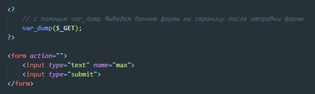
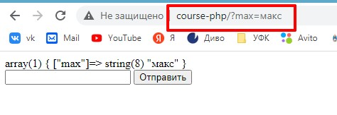
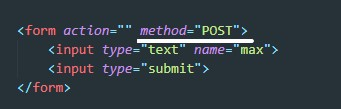
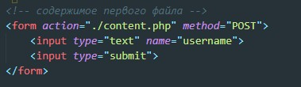
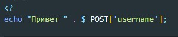
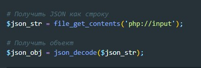

После отправки формы любым из способов, формируется глобальный массив, из которого мы можем получить все данные полей формы. ($_GET и $_POST)
C точки зрения php основное отличие GET от POST - это то, что данные которые мы отправили GET запросом отображаются в адресной строке
НА самом деле есть еще отличия POST от GET. В Get запросе ограничено количество передаваемой информации. С GET запросом нельзя передавать картинки, файлы или длинные тексты.
Что бы использовать метод POST необходимо в форме указать метод POST
При указании в атрибуте action путь до php файла, глобальный массив передастся этому файл php. Например
Так выглядит сам файл content.php
В случает если мы отправляем через fetch данные формы FormData то проблемы возникать не должны. НО!!! Если мы с помощью fetch запроса отправляем данные в JSON то данные не попадают в глобальный объект $_POST. Полученные данные мы можем получить с помощью функции file_get_contents которой в качестве аргумента передадим строку - 'php://input'
